Introduction - AIR CONDITIONING CASING AND COMPONENTS
- Path
- Descriptions > 50 AUXILIARY UNITS > 5040 AIR CONDITIONING CASING AND COMPONENTS > Introduction - AIR CONDITIONING CASING AND COMPONENTS
- Kind
- system description
- Applies to
- all engines; all production periods
- Interactive page
- https://sloeber94.github.io/elrnDB-lYpsln/en/#/2429854
Applies to: all engines; all production periods
DUAL ZONE AIR CONDITIONER
The climate control system fitted on the vehicle is a system which allows the alteration of the ambient characteristics of the air introduced into the passenger compartment (temperature and humidity) making it possible to demist the glass surfaces and prevent the intake of pollutant substances in an attempt to make the environment in the passenger compartment healthier.
The air conditioning system is a feature which contributes greatly to improving the feeling of well being.
Applies to: all engines; all production periods
TYPE
The vehicle is equipped with a split automatic climate control system (dual zone) that controls the temperature on both the driver and passenger sides, heating or cooling the air introduced into the passenger compartment so that it reaches the desired level.
Applies to: all engines; all production periods
CLIMATE CONTROL SYSTEM COMPONENTS
Components of the climate control system are shown in the figure below.
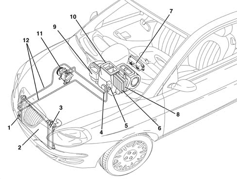
1, Linear pressure switch 2, Condenser 3, Drier filter built into the condenser 4, Low pressure pipe 5, Expansion valve 6, Evaporator 7, Control panel with electronic control unit 8, Heater radiator 9, Pollen filter 10, Duct/distribution unit 11, Compressor 12, Pipes
Applies to: all engines; all production periods
AUTOMATIC CLIMATE CONTROL SYSTEM CONTROL UNIT
The controls for the automatic climate control system are located on the electronic control unit user interface.
The system is managed by a control unit which is capable of controlling the temperature in two areas of the passenger compartment (driver side and passenger side), heating or cooling the incoming air so that it reaches the desired temperature.
The following figure shows the control unit - electronic control unit.
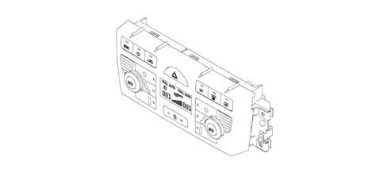
Applies to: all engines; all production periods
CONTROL UNIT PIN OUT
The following figure shows the location of the electrical connection.
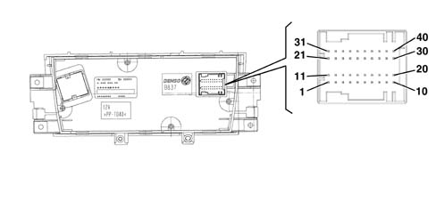
Applies to: all engines; all production periods
CONTROL UNIT PIN OUT
PIN | OPERATION |
|---|---|
01 | CAN L line |
02 | CAN H line |
03 | Not connected |
04 | Heated rear windscreen operation |
05 | Fan control |
06 | Air quality sensor |
07 | Solar radiation sensors supply |
08 | Frost sensor |
09 | Right VENT treated temperature sensor |
10 | Left solar radiation sensor |
11. | Analogue earth |
12. | Open recirculation control |
13 | Heated rear window led |
14 | Hazard warning light led |
15 | Hazard warning light control |
16 | Misting sensor |
17 | Left FLOOR treated air temperature sensor |
18 | Left VENT treated temperature sensor |
19 | Right solar radiation sensor |
20 | Right FLOOR reated air temperature esnsor |
21 | Compressor control |
22 | Closed recirculation control |
23 | Not connected |
24 | Right mixer actuator shared |
25 | Left mixer actuator feedback |
26 | Right mixer actuator feedback |
27 | Right distribution actuator feedback |
28 | Left distribution actuator feedback |
29 | Fan feedback |
30 | Battery power supply |
31 | External 5v supply |
32 | Left mixer actuator control |
33 | Right distribution actuator shared |
34 | Right distribution actuator control |
35 | Right mixer actuator control |
36 | Left distribution actuator control |
37 | Left mixer actuator shared |
38 | Left distribution actuator shared |
39 | Signal + key |
40 | Electronic earth |
Applies to: all engines; all production periods
CONTROL PANEL
The control unit which manages the automatic climate control is capable of producing and maintaining the desired comfort in two areas of the passenger compartment by controlling the following parameters and functions:
- Air temperature at the driver/passenger vents;
- Speed of the fan (varies continuously);
- Air distribution;
- Compressor engagement;
- Recirculation;
The climate control system is managed so that it regulates the 'equivalent temperature' i.e. the temperature correlated to the thermal sensation and defined by a series of parameters such as humidity, passenger compartment air flow rate, average temperature, etc.
Therefore the user sets an equivalent temperature and the system acts on all the variables under its control to ensure the desired thermal sensation; for this reason the temperature measured in degrees centigrade inside the passenger compartment may not coincide with the temperature shown on the display.
The following parameters/functions can be modified manually:
- Driver/passenger side temperature
- Fan speed.
- Distribution pattern via 5 positions (driver/passenger side)
- Compressor.
- Demist/defrost function.
- Recirculation.
Manual selections always take precendence over automatic selections and are stored until the user allows the automatic device to take over again.
The manual setting of a function does not adversely affect the control of other functions set to automatic, in particular, the control of the temperature is always automatic when the system is running.
At each key on, the system returns to the settings stored at key off, except for:
- the MAX DEF function, which is reset
- recirculation, which is bypassed to open with the compressor OFF
Applies to: all engines; all production periods
INTRODUCTION
All the buttons (except the adjustment ones) have dual functions (ON/OFF) including the recirculation.
The diagram below illustrates the climate control system control unit panel.
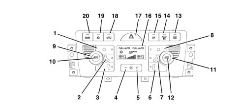
1 - Left DEF air distribution button 2 - Left VENT air distribution button 3 - Left FLOOR air distribution button 4 - Fan speed reduction key 5 - Fan speed increase key 6 - Right DEF air distribution button 7 - Right VENT air distribution button 8 - Right FLOOR air distribution button 9 - Driver's side temperature adjustment knob 10 - Left AUTO mode button 11 - Passenger side temperature adjustment knob 12 - Right AUTO mode button 13 - Heated rear window activation button 14 - Defrost key 15 - Control unit deactivation button 16 - Display 17 - Hazard warning light button 18 - Recirculation key 19 - Compressor engagement button 20 - Passenger mode adjustment button
Applies to: all engines; all production periods
INTRODUCTION
The diagram below shows the control unit display only.
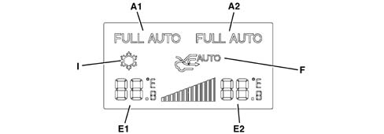
Applies to: all engines; all production periods
TEMPERATURE SETTING KNOB
By turning the knob to the desired area (driver's knob 9 or passenger knob 11) the temperature can be increased (clockwise direction) or decreased (anti-clockwise direction).
At the key off, the temperature settings are memorized and renewed at the next key on.
The increases/decreases are in 0.5 °C steps and one complete revolution of the knob produces 34 steps.
The temperature setting range is 16 to 32°C. Below 16 °C the value set becomes 'LOW' whilst above 32 °C the value set becomes 'HI'. In addition, the difference between the temperature setting on the left hand side and that on the right hand side cannot exceed 7°C.
Applies to: all engines; all production periods
HIGH CONDITION (HI)
The HI or maximum heating condition (shown on the display in range E1 and E2) is achieved by setting a T. equiv. by the driver above 32 °C.
the request by the user (driver knob 9 or passenger knob 11) for the HI or maximum heating condition switches off the FULL AUTO icon (A on the display) and forces the MONO condition (B on the display) regulating the following parameters:
- The recirculation and compressor status remain unaltered;
- The mixture flaps are in the fully hot position;
- The distribution flap is in the FLOOR position and the LED (in button 3) is on;
- The air flow rate value is at a preset level.
In HI mode all manual settings are possible in accordance with the operating strategy.
The Auto command is accepted, this resets the HI function and sets the temperature in both areas to 32 ºC.
If the driver turns the temperature setting (knob 12) this affects the passenger setting other than HI at 32. °C.
If the passenger turns the temperature setting (knob 13) then this also alters the driver's setting, taking it out of HI (at 32 °C) and then they can only alter their own setting when the system is in the DuaI Zone setting.
Applies to: all engines; all production periods
LOW CONDITION (LO)
The LO or maximum cooling setting (shown on the display in range E1 and E2) switches off the FULL AUTO icon condition and forces the MONO condition involving the following actions:
- Enabling of the compressor (display I);
- Mixture flaps in fully cold position;
- The distribution flap is in the VENT position and the LED is on;
- The air flow rate is at a set value
- Recirculation remains unaltered as requested by user.
In LO mode all manual settings are possible in accordance with the operating strategy.
The Auto command is accepted, this resets the LO function and sets the temperature in both areas to 16 ºC.
Applies to: all engines; all production periods
AUTO MODE BUTTON
Pressing this button (1A) causes the FULL AUTO logo to appear and the system is managed automatically controlling the:
- Air distribution (to the required side);
- Fan speed;
- Compressor;
- Recirculation.
Thus if outdoor temperature is >= a 5°C we obtain:
- FULL AUTO logo ON;
- Led on compressor enablement key (19) and ice logo on display ON;
- AQS logo on display ON.
If outdoor temperature is <= a 3°C we obtain::
- FULL AUTO logo ON;
- led on compressor enablement key (19) ON with ice logo on display OFF;
- Forced recirculation ON.
The FULL condition only switches off when at least one manual control or distribution or flow rate function etc. is enabled Now the system automatically returns to FULL AUTO only if the AUTO key is pressed.
If the compressor is also switched off (ice LED and symbol off) then the system may not be capable of controlling/maintaining the temperature set. Under these circumstances the 'ice' symbol in the Climate display will flash.
If the compressor has not been enabled by the end of the flashing, the word FULL (or AUTO only if FULL was already off) will switch off on the display.
Applies to: all engines; all production periods
AIR DISTRIBUTION BUTTONS
there are 5 air distribution positions with the system automatically managing the distribution and displaying its selection through the LEDs in the control buttons coming on.
MANUAL DISTRIBUTION
One of the 5 positions can be selected manually by operating the appropriate buttons (1, 2, 3 - 6, 7, 8) in the combinations described below.
MAIN DISTRIBUTIONS:
- DEF (hot/cold air or a mixture for defrosting) (button 1,8)
- VENT (hot/cold ventilated air or front mixture) (button 2,7)
- FLOOR (hot/cold air or a mixture at the floor) (button 3,6)
Possible combined distribution patterns:
- BILEVEL (VENT-FLOOR) (2-3, 7-6)
- HEAT (DEF-FLOOR) (1-2, 7-8)
Distribution not possible:
- all OFF, DEF-VENT, DEF-VENT-FLOOR
With the main distribution activated (one LED on) the following takes place when the same button is pressed:
- the distribution remains unchanged;
- the system switches to manual operation (the FULL logo goes out if it is on).
The left DEF distribution (driver) takes precedence over the passenger distribution. Whenever the driver sets the distribution to DEF, passenger distribution is also set to DEF. The passenger may exit this mode by operating any of the right distribution keys. Whe the driver goes on to select another position other than DEF, the passenger position remains DEF (if the MONO key is off). The passenger may exit this mode by operating any of the right distribution keys.
Applies to: all engines; all production periods
AUTOMATIC DISTRIBUTION
In automatic mode the distribution is operated by means of an algorithm which controls the various functions according to given conditions.
According to driver TTP, 3 situations may arise at key on:
- driver TTP <= 20°C: VENT distribution;
- driver TTP > 20°C, <29°C: BILEVEL distribution;
- driver TTP >= 29°C: FLOOR distribution.
The system also governs changes between the different distribution patterns on the basis of external conditions and system requirements. When in BILEVEL mode, the following situations occur.
Shift from FLOOR distribution if the following conditions exist simultaneously:
- Outdoor temperature < 11°C
- Solar radiation < 250 W/m2
or if:
- TTP > 29 °C
return to BI-LEVEL distribution if the following conditions exist simultaneously:
- Outside temperature > 15 °C or solar radiation > 400 W/m2
- TTP < 25 °C
Shift from VENT distribution if the following conditions exist simultaneously:
- Outside temperature > 19 °C or solar radiation > 600 W/m2
- TTP < 16 °C
return to BI-LEVEL distribution if the folowing conditions exist simultaneously:
- Outdoor temperature < 17 °C
- Solar radiation < 450 W/m2
or if:
- TTP > 20 °C
In addition to the distribution control the system also displays the selection by lighting up the LEDs in the control buttons.
Applies to: all engines; all production periods
RECIRCULATION
The recirculation button and LED operate in ROLLING mode (if climate control unit is on); if the button is pressed repeatedly three possible types of operating modes are possible as described below:
- Automatic recirculation (managed by AQS - Air Quality Sensor)
- Forced recirculation closed (passenger compartment air)
- Forced recirculation open (outside air)
The following are used to display the various recirculation modes:
- A symbol on the display showing the car's outline and an arrow indicating recirculation status;
- the message AUTO on the display to indicate that recirculation is managed automatically by the AQS;
- key (18) with led (if the led is ON, recirculation is FORCED CLOSED)
The following figure shows the four types of display.
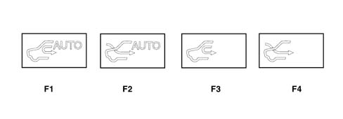
F1 - Automatic recirculation (with flap closed) F2 - Automatic recirculation (with flap open) F3 - Recirculation forced closed F4 - Recirculation forced open
Applies to: all engines; all production periods
RECIRCULATION
If the climate control unit is turned off, the recirculation switches to FORCED CLOSED Under these circumstances, the recirculation key is dual (FORCED CLOSED/FORCED OPEN).
At key off, the recirculation remains in the position stored prior to deactivation.
At key on, recirculation is forced open with the compressor off.
Applies to: all engines; all production periods
AUTOMATIC
The control unit software automatically manages the recirculation function on the basis of a set of operating parameters, namely engine heating stage, requirement for air exchange in the passenger compartment, outdoor air quality, low vehicle speed etc.
Even when recirculation is closed, the system switches to recirculation forced open mode after 25 minutes to allow satisfactory air exchange.
The AQS sensor closes recirculation when the level of harmful gases in the outside air exceeds certain alarm thresholds. When vehicle speed drops below 6 km/h (stop and go), the system also turns off recirculation. Ten seconds after vehicle speed exceeds 12 km/h, the system resets the pre-existing control conditions.
If no AQS sensor is present, recirculation is normally open and the stop and go function is not implemented. The air exchange and engine heating stage strategies persist.
Applies to: all engines; all production periods
CLOSED FORCED CIRCULATION
This type of manual operation, indicated by symbol F3 on the display and recirculation led on (on key 18) closeos the recirculation flap.
The flap is timed to re-open after every 25 continuous minutes of recirculation closed.
Applies to: all engines; all production periods
OPEN FORCED CIRCULATION
In this type of manual operation, signalled by the symbol F4 and recirculation led (on key 18) being off, forced opening of the recirculation air flap takes place.
Applies to: all engines; all production periods
AIR FLOW RATE VARIATION CONTROL (FAN)
The air flow rate can be adjusted manually (using buttons 4 and 5) to 12 levels displayed on a bar graph (G on the display) in 12 steps.
To increase the air flow rate in the passenger compartment, operate the button with the '+' icon (on the panel) and to decrease it, use the button with the '-' icon (on the panel).
The speed is automatically adjusted continuously by the control unit and the number of lit bars on the display is proportional to flow rate.
Manual intervention on the fan control results in the exit from the FULL AUTO condition.
At KEY ON, if the automatic mode is switched on, the air flow rate is at the first half-bar (minimum flow rate) until the engine is switched on (the automatic mode does not work if the battery level is too low).
If the compressor is disabled the ventilation control can be adjusted manually until the display shows 0 bars and zero flow rate.
With the compressor switched on and the engine started up, the manual ventilation cannot go below the minimum flow rate value to prevent the compressor from freezing (1 bar on the display).
Applies to: all engines; all production periods
COMPRESSOR ENABLEMENT
The led on compressor key (10) indicates the user's requirement: if the led is on, the user wishes to activate the compressor.
The ice symbol on the display indicates compressor enablement: if it is on, the compressor is enabled, i.e. engine control activation is required.
With the led on, key (19) can be pressed to turn off the led and disable the compressor. The selection remains stored for an indefinite period even after the vehicle has stopped in the same way as the other manual controls.
Applies to: all engines; all production periods
COMPRESSOR MANAGEMENT
Press compressor key (19) to enable the compressor control and activation of the led.
From now on, provided external temperature requirements are met, the system generates the amount of cooling required to control the climate inside the passenger compartment and the evaporator dehumidifies the air.
These functional states are maintained even after successive KEYS OFF/ON.
Outdoor temperature also limits compressor operation in certain ways:
- if the outside temperature < 3°C the compressor is disabled (the ice symbol on the display is off);
- if the outside temperature > 5°C the compressor is enabled (the ice symbol on the display is on)
Defrosting sensor enablement is a further limitation.
Applies to: all engines; all production periods
ICE SYMBOL FLASHING
When the user disables the compressor, the following takes place:
The comressor key led (19) goes off and also the ice symbol on the display.
The FULL message on the display goes off.
The control unit checks whether the system is able to reach/maintain the required temperature at the current outside temperature:
- If so, the sysem works normally and is capable of meeting the requirement without switching on the compressor.
- If not, then the system is not capable of supplying the temperature request by the user and signals this showing the temperature set, flashing in the display.
At the end of the signalling, if the compressor button is not pressed, the AUTO logo goes out and a flashing cycle is reactivated at the next KEY ON.
Flashing will not take place if the outdoor temperature is <= 3°C.
The system will turn the ice logo on as soon as the outdoor temperaure is >= 5°C.
Applies to: all engines; all production periods
SWITCHING OFF THE CONTROL UNIT (OFF)
Pressing the OFF button (15) causes the:
- current status to be stored;
- OFF button LED to come on
- key leds and symbols to go off except for the heated rear window, if on.
- forced air recirculation closed and display symbol on;
- fan excluded;
- compressor excluded;
- mixing flap in maximum cooling position
- distribution to VENT
In OFF mode, the heated rear windscreen button (13) is managed normally without activating the Climate system.
In OFF the recirculation button operates in dual (ON/OFF) mode without any automatic device.
pressing any button afterwards (except for the rearscreen and recirculation buttons) switches the system back and implements the required function if previously off (otherwise it confirms it) and restores all the other operating conditions memorized previously. Air flow increase control (key 5) restores all conditions prior to deactivation beyond the first bar and simultaneously implements a manual output request. Pressing the OFF button (10) for a second time also restores all the conditions prior to deactivation.
Applies to: all engines; all production periods
MONO CONTROL
The following actions take place when the MONO key (20 on the keypad) is pressed:
- passenger side temperature setting is made the same as the setting chosen by the driver.
- the air distribution setting on the passenger side is made the same as that set on the driver side; if manual, the passenger compartment distribution will be the same as that set by the driver. If automatic, the passenger and driver side distributions will be controlled automatically.
Return to a DUAL ZONE system (with the word MONO going out) is managed by the system by pressing the mono button again or by altering the passenger temperature setting.
These functional states are maintained even after successive KEYS OFF/ON.
Applies to: all engines; all production periods
MAX DEFROST BUTTON
The MAX DEF procedure manages the flow rate and the distribution of the air with the aim of demisting the windows as quickly as possible (operated with the engine off, but with minimum output)
Function activation lasts for 3 minutes, from when coolant temperature exceeds a set value.
When the MAX DEF button is pressed (14 in the panel) the system carries out the following operations:
- MAX DEF LED comes on (on button 14);
- Memorizing the functional state and MAX DEF previous displays
- Switching off the LED/message for the FULL AUTO, RECIRCULATION and air quality (AUTO) functions;
- Switching on of the DEF distribution, compressor enabling, MONO, heated rear windscreen and recirculation open LEDs
- Temperature display set to maximum heating (HI) on both side displays
- Display of the fan in the display.
In addition, the activation of the following commands:
- Air flow at 80% of maximum flow;
- Distribution flap set to DEF;
- Mixer flaps set to MAX HEAT;
- Forced air intake flap open (dynamic)
- Compressor function enabled
- AQS function disabled;
- During MAX-DEF operation, it is possible to alter air flow (up/down) as required and deactivate the heated rear window
It is possible to interrupt the MAX-DEF function by operating any of the climate control buttons (Recirculation, Compressor Enabling, Auto, Mono, MAX-DEF) implementing the return to the previous condition MAX DEF condition and implementing the command for the button pressed.
The management of the MAX-DEF procedure takes precedence over the management of the following procedures:
- LO (maximum cold)
- HI (maximum heat)
Their execution, if in progress, is interrupted if the MAX-DEF procedure is activated.
Applies to: all engines; all production periods
DEMISTING FUNCTION
The climate system operates this function by means of a sensor (fog sensor) with an optical system that analyses the level of condensation formed inside the passenger compartment, i.e. mist on the windows. This effect dramatically reduces driving safety.
The climate control unit uses nformation recorded by the fog sensor to activate automatically any functions that could prevent misting even before it is detectable by the human eye. This means that the user does not need to turn on manual controls that could distract his or her attention from the road and reduce the safety level.
The sensor is fitted near the interior rear view mirror so that it does not obstruct the driver's view. It is fitted in an area that easily becomes misted and the optical reception part points in the direction of the windscreen.
The signal emitted by the sensor is also filtered to eliminate any interference (ambient light, temperature, rain, obstructions, dust and dirt).
The automatic demisting procedure may take place under certain conditions:
- During engine warm-up (winter transitory period), the procedure is inhibited;
- If outdoor temperature is < 25°C, the procedure is enabled;
- If outdoor temperature is >= 25°C and solar radiation is>= 300 W/m2 the procedure is inhibited;
- If outdoor temperature is >= 25°C and solar radiation is< 300 W/m2 if the compressor is enabled, the procedure is inhibited. Otherwise it is enabled
Under the conditions described, the automatic demisting procedure is enabled with operation of the AUTO key at each key on. When the procedure is running, it can be disabled if the user carries out a manual action on the compressor, distribution, recirulation rate. The procedure remains disabled until the next AUTO command or the next key-on.
When operational, the procedure is activated if the control receives a signal higher than the demisting strategy intervention threshold from the fog sensor.
The procedure consists of a set of sequentially-executed stages. The mode of changeover from one to the next depends on progressive thresholds that are compared with the input signal and/or predetermined stage duration times.
Four progressive intervention stages are planned. Changeover from one from the next is determined by the level of misting detected by the fog sensor or a preset time period if the demisting trend does not decrease.
Each of the four stages corresponds to a different intervention designed to remove the misting.
- Stage 1: air intake flap in dynamic position and compressor enabled;
- Stage 2: air distribution to the windscreen (DEF or HEAT according to pre-existing situation);
- Stage 3: Air flow increased (if not already at maximum);
- Stage 4: Air distribution in DEF position.
The procedure lasts a total time of 300 seconds and restores the system to standard control mode when this period is over.
When the sensor sends signals to the control unit, a diagnostic protocol is run to identify errors or anomalies
Applies to: all engines; all production periods
SWITCHING ON AFTER THE VEHICLE HAS STOPPED
When the system is switched on the various parameters are checked manually or automatically depending on the selections made by the user before it was switched off.
All the manual interventions made before the engine was switched off are stored in the memory until the next time the engine is started up.
Applies to: all engines; all production periods
INITIALISATION PROCEDURE
If the control unit or one of the actuators are replaced, the flap positions must be initialised using an Examiner.
Applies to: all engines; all production periods
SPECIFCATIONS
The unit consists of two modules which contain:
- the fan
- the evaporator
- the heater radiator
- pollen filter
- the upper/lower mixture air temperature sensors
- flap control actuators.
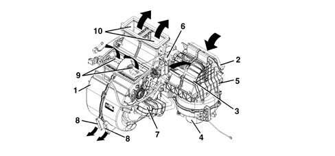
1 - duct/distributor assembly 2 - outdoor air intake 3 - recirculation air intake 4 - fan 5 - pollen filter 6 - evaporator 7 - heater 8 - FLOOR air outlet 9 - VENT air outlet 10 - DEF air outlet
Applies to: all engines; all production periods
SPECIFCATIONS
Location of sensors and actuators
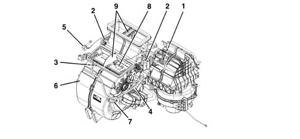
1 - recirculation actuator 2 - distribution actuator 3 - left side mixer actuator 4 - right side mixer actuator 5 - left side Vent treated air sensor 6 - left Floor treated air sensor 7 - right Floor treated air sensor 8 - right side Vent treated air sensor 9 - dual zone partition
Applies to: all engines; all production periods
ACTUATORS
The temperature of the treated air is adjusted through the temperature setting knobs.
The actuators control the rotation of the mixture flaps according to the signal from the control unit. A motor with a 12 volt supply controls the rotary movement of a drive pin which acts directly on the mixture flaps.
A potentiometer detects the actual position and provides feedback to the control unit.
Applies to: all engines; all production periods
AIR DISTRIBUTION ACTUATOR
The air distribution actuator rotates the distribution flaps.
It is supplied at 12 V and can be turned clockwise or anticlockwise by reversing the polarity. A potentiometer detects the effective position and acts with feedback to the control unit checking the complete travel between the extreme positions.
Applies to: all engines; all production periods
LEFT OR RIGHT AIR MIXER ACTUATOR
Rotates the flaps to mix the air in the relevant area.
It receives a 12 V supply and if the polarity is reversed, it is possible to rotate it in a clockwise or an anti-clockwise direction. A potentiometer detects the effective position and acts with feedback to the control unit checking the complete travel between the extreme positions.
Applies to: all engines; all production periods
RECIRCULATION ACTUATOR
This actuator manages the rotation of the flap in the two dynamic air and recirculation limit positions with no intermediate positions.
It receives a 12 V supply and if the polarity is reversed, it is possible to rotate it in a clockwise or an anti-clockwise direction.
Applies to: all engines; all production periods
AUTOMATIC SYSTEM OPERATION
The air is drawn in by the fan through the outside air intake or through the internal air intake. It passes through the pollen filter and reaches the main body. Here it flows through the evaporator to the mixing and distribution area. The temperature of the air to be sent to the vents is determined by the position of the mixture flap which has the task of shuttering the flow of air coming from the outside directly to the distribution zone or the heat exchanger. An internal partition keeps the right and left areas of the main unit separate.
Applies to: all engines; all production periods
TREATED AIR TEMPERATURE SENSORS
Four temperature sensors on the duct/distributor unit send the climate control unit a signal describing the temperature of the air leaving the right and left outlets. Two sensors are located near the FLOOR outlets, the other two inside the central facia outlets.
The sensors are NTC type and their resistance is 10000 Ohm ± 5% at a temperature of 25 °C
Applies to: all engines; all production periods
SOLAR SENSOR
The solar sensor is located on the upper part of the facia at the windscreen base and its task is to convert light signals (lux or kcal/m2h) into a proportional electrical linear signal. The sensor is a specific type of diode (photodiode) that can alter its rate of conduction according to the amount of light that strikes it; in practice, the light that strikes the lens of the photodiodes releases electrons from the crystal grating.
An superabundance of electrons and gaps therefore appear.
The electrons flow toward the photodiode spatial charge or junction area (NP) and increase junction current (photoelectric current) in proportion with light intensity. In order to achieve a very high response rate, the photodiode is fitted with a lens designed to focus light more effectively on the photodiode semiconductor junction (NP).
Using this signal, the control unit (NCL) varies the temperature parameters decreasing it, acting on the air distribution at the same time.
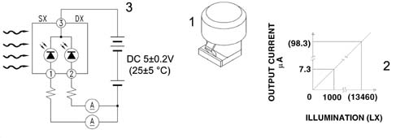
1 - Solar sensor 2 - Graph showing lighting - output current 3 - Solar sensor operating diagram
Applies to: all engines; all production periods
FROST SENSOR
The gas flow rate control system is operated by an electronic control unit which acts on the compressor solenoid valve according to the temperature of the evaporator, measured by means of an NTC type sensor.
This type of sensor, known as a frost sensor, is located inside the distributor unit, fitted directly onto the evaporator.
It detects the temperature of the evaporator, notifying the control unit which, if necessary, switches off the compressor to prevent the evaporator from freezing.
Applies to: all engines; all production periods
OUTSIDE AIR TEMPERATURE SENSOR
This is an NTC sensor fitted to the lower edge of the right door mirror.
The sensor provides the control unit with a signal proportional to the temperature of the air drawn in by the manifold.
Applies to: all engines; all production periods
EXPANSION VALVE
The diagram below shows a section of the expansion valve and identifies the main components.
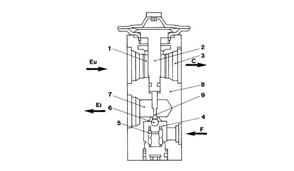
1, Fluid outlet duct from the evaporator 2, Heat sensitive element 3, To the compressor inlet connector 4, Pressurized fluid 5, Opposing spring 6, Ball and calibrated port 7, Expanded fluid (to the evaporator inlet connector) 8, Valve casing 9, Rod C, To the compressor F, To the drier filter Ei, Evaporator intake Eu, Evaporator outlet
Applies to: all engines; all production periods
EXPANSION VALVE
The tasks of this valve are to:
- Separates the high pressure circuit from the low pressure circuit;
- Expands the coolant (change from liquid state to gaseous state);
- Regulates the evaporation process (flow rate);
- Regulates the evaporation temperature;
- Protects the compressor from the coolant.
The thermostatic expansion valve, fitted on the evaporator inlet/outlet ducts has the task of regulating the flow and expansion (fall in pressure) of the R134a fluid before it enters the evaporator.
The automatic regulation of the passage section for the gas inside the expansion valve is carried out by a sensitive bulb which, according to the temperature of fluid, suitably adjusts the size of the gas port acting on a special spring which moves a shutter, determining the extent of the expansion.
The increase in temperature at the evaporator outlet, measured by the bulb, causes the opening of the valve with a consequent increase in the flow rate of the fluid to the evaporator.
Conversely, at low temperatures, there is a reduction in the size of the gas port, causing a decrease in the gas flow.
The expansion valve is directly accessible from the engine compartment, see diagram below:
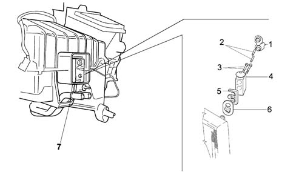
1, Expansion valve cap 2, M6x22 bolt 3, M5x50 bolt 4, Expansion valve 5, Plate fixing Valve/pipes 6, Freon pipe seal 7, Valve
Applies to: all engines; all production periods
EXPANSION VALVE
This type of expansion valve has two different routes for the coolant:
- Lower passage, from point (4), gas coming from the drier filter, to point (7), gas outlet towards the evaporator, containing the overheating spring (5) and the modulating element which, in this case, is the ball (6) housed in the calibrated duct.
- Upper passage, from point (1), gas coming from the evaporator, to point (3), gas outlet towards the compressor, containing the thermostatic sensor (2) which is connected to the upper part of the diaphragm and to the ball (6).
The flow rate control function is exerted through the movement of the ball (6), connected via the rod (9), to the thermostatic sensor (2).
The action of the ball (6) is opposed by the suitably calibrated spring (5) so that the coolant in the evaporator is in a gaseous state, without the presence of any liquid which, if drawn in by the compressor, could damage it.
The position of ball (6) depends on pressure differences acting on a diaphragm located inside sensor (2); this, in turn, depends on the evaporator refrigerant fluid outlet temperature (upper valve passage).
High temperatures of the gas leaving the evaporator (1) corresponding to conditions where large amounts of heat are dissipated cause the pressure inside the thermostatic sensor (2) to increase; this involves a movement of the rod (9) and the ball (6) connected to it which increases the passage section and, consequently, the coolant (7) flow rate.
The reverse takes place at low evaporator (1) gas outlet temperatures.
Applies to: all engines; all production periods
AIR QUALITY SENSOR (AQS)
The air quality sensor is an electronic device which sends a signal t the climate control unit when the air pollution index exceeds a pre-set level. The control unit then manages the automatic recirculation function to prevent polluted air from entering the passenger compartment. The sensitive element of the sensor can detect the presence of oxidising particles (e.g. CO) or reducing particles (e.g. NOx) in the air flow entering the vehicle.
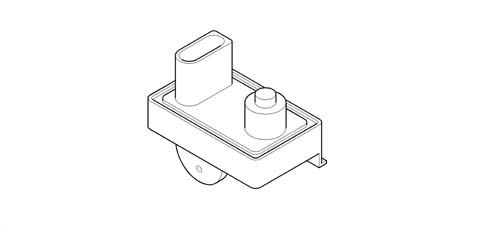
Applies to: all engines; all production periods
FOG SENSOR
This sensors is housed in the region of the interior rear view mirror with the sensitive element turned toward the inner surface of the windscreen. An electronically-controlled optical system detects the windscreen mist level and sends a set of signals to the control unit based on preset intervention thresholds.
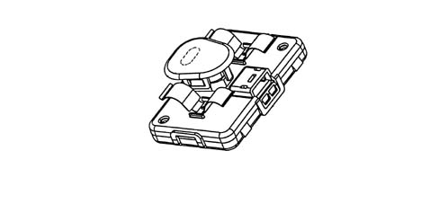
Applies to: all engines; all production periods
FOG SENSOR
The signal takes the form of a train of pulses with a duty cycle that ranges from 10% to 90%.
Applies to: all engines; all production periods
LINEAR PRESSURE SWITCH
The function of the linear sensor is to control the correct operation of the system replacing the function of the quadrinary pressure switch. The sensor continuously and uniformly analyzes the pressure in the climate control system circuit providing the engine management control unit with the variations in pressure, in real time, making the management of the activation thresholds more flexible.
Each variation in pressure has a corresponding voltage signal used by the engine management control unit to activate the fan speed and switch off the compressor if the pressure increases or decreases beyond the permitted limits (safety function).
The operating range of the linear sensor goes from 3.018 bar to 29.508 bar according to the following pressure (Bar) - output voltage percentage (%Vcc) curve.
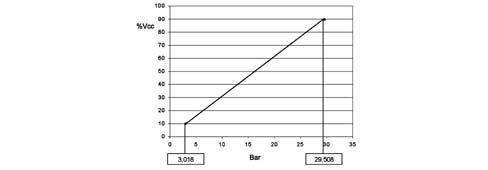
Applies to: all engines; all production periods
LINEAR PRESSURE SWITCH
The go ahead for the operation of the compressor and the regulation of the fan speed, dependent on the change in pressure, takes place in the following pressure range; above and below these values the compressor is deactivated for safety reasons to prevent damage to the system.
The diagram below illustrates the sensor pin out:
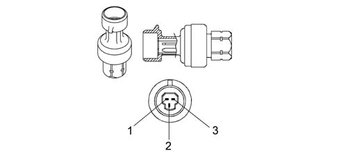
1, earth 2, supply voltage 3, output signal
Applies to: all engines; all production periods
COMPRESSOR
The circulation of the coolant fluid is allowed, altering the pressure level, using the mechanical energy drawn from the engine via the pulley and the electro-magnetic clutch.
DENSO SCSB06 and SCSC06 compressor specifications
- max. no. of continuous revs: 8450 rpm
- max. no. of non continuous revs: 10,000 rpm
- orbital rotation radius: 4.58 mm
- quantity of lubricant: 50 cm[sup3 ].
The compressor is orbital spiral type with a system that ensures that it is deactivated when the temperature of the evaporator gets close to freezing. The deactivation signal is governed by a demisting sensor fitted to the evaporator.
Orbital spiral compressors consist of a fixed scroll 1 (casing) and a moving scroll 2.
The movement of the camshaft (3) connected to the pulley creates a chamber whose volume is reduced during the rotation allowing compression.
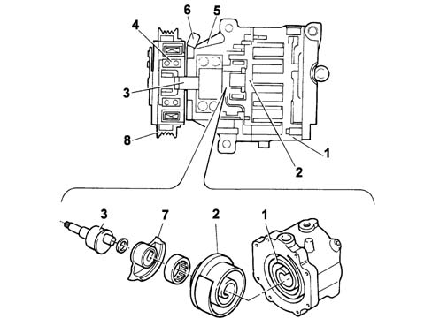
1 Fixed scroll (casing) 2 Orbiting scroll 3 Camshaft 4 Camshaft seal 5. Guard 6. Compressor electrical supply connection 7. Balancing mass 8. Pulley
Applies to: all engines; all production periods
COMPRESSOR
The contact between the compressor fixed scroll and the orbiting scroll creates a chamber whose volume gradually decreases when the rotating scroll rotates.
The compression chamber is alternately open to supply gas, closed to transport it and then open at the outlet connector to discharge the pressurized gas.
The pressure of the gas stored, defined by the volume of the two scrolls (one moving, one fixed), gradually increases until the gas reaches the centre zone where the operating pressure is reached; the gas is released here through the outlet connector to the condenser.
The sequence illustrates the three different gas compression stages: the compression takes place after three complete revolutions of the orbiting scroll.
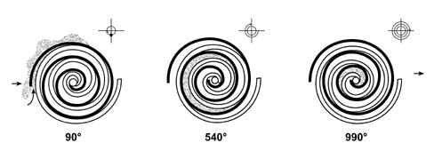
Applies to: all engines; all production periods
COMPRESSOR
The adoption of these compressors, consisting of only two parts, has led to the following advantages:
- No gaskets are required
- There are no radial or axial leaks.
- Low charge loss due to the absence of internal pipes and valves.
- As the scrolls wear down, the side seal is improved.
- The absence of valves, knocking and pulsing reduces noise.
conversely, as there is no variable capacity compression, the presence of the frost sensor is required to prevent the evaporator from freezing.
Applies to: all engines; all production periods
CONDENSER WITH INTEGRAL DEHYDRATING FILTER
The condenser is a heat exchanger located in front of the engine cooling radiator.
The coolant, in a gaseous state, passes through the condenser pipes and liquefies (at an average temperature of 60°C).
The outside of the condenser comes into contact with the air produced by the vehicle moving forwards. When the car is at a standstill or in a traffic jam, air is set in motion by the engine radiator fan.
An insufficient heat exchange in the condenser increases the pressure in the system and causes the incomplete condensation of the fluid with a considerable reduction in the efficiency of the system.
A housing for the fully-integrated dehydrating filter is located on the left side of the condenser. This solution allows system layout to be optimised.
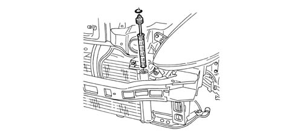
Applies to: all engines; all production periods
INTRODUCTION
A single-zone manually-operated climate control system is fitted to the intermediate vehicle specification.
The air conditioner assembly is similar to that of the automatic climate control system except for the following differences:
- Single zone assembly without partition and unspilt ports.
- Specific control unit
- Bowden cables controlling recirculation, mixer and distribution flaps.
- Resistance-controlled fan speed regulator
Applies to: all engines; all production periods
CONTROL ASSEMBLY
The control panel is located in the middle of the dashboard.
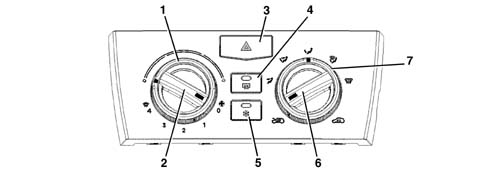
1 - Wheel for setting required temperature 2 - Fan speed knob 3 - Hazard warning lights switch 4 - Heated rear windscreen activation button with led 5 - Air conditioning activation button with led 6 - Air recirculation activatiojn knob 7 - Air flow distribution selection wheel
Applies to: all engines; all production periods
CONTROL ASSEMBLY
The air distribution wheel can be set to 5 different modes:
- flow to front outlets only,
- flow to front and lower outlets,
- flow to lower outlets only,
- flow to lower outlets and windscreen,
- flow to windscreen only;
Applies to: all engines; all production periods
AIR CONDITIONING ASSEMBLY
The figure shows the air conditioner assembly
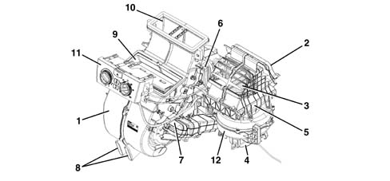
1 - Duct/distributor assembly 2 - Outdoor air intake 3 - Recirculation air intake 4 - Electric fan 5 - Pollen filter 6 - Evaporator 7 - Heater 8 - FLOOR air outlet 9 - VENT air outlet 10 - DEF air outlet 11 - Control assembly 12 - Fan speed regulator
Applies to: all engines; all production periods
INTRODUCTION
A climate control system with manually-operated heater is supplied as the basic vehicle specification.
The heater assembly is similar to that fitted to the manually-controlled air conditioner except for the following differences:
- No air conditioning system (compressor, evaporator, condenser etc.)
- Control unit without air conditioner control button.
- No air ducts to rear seats
For further information, see 5040 - Manual air conditioner.
Applies to: all engines; all production periods
CONTROL UNIT
The control panel is located in the middle of the dashboard.
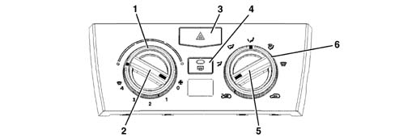
1 - Wheel for setting required temperature 2 - Fan speed knob 3 - Hazard warning light switch 4 - Heated rear windscreen activation button 5 - Air recirculation activation knob 6 - Air flow distribution selection wheel